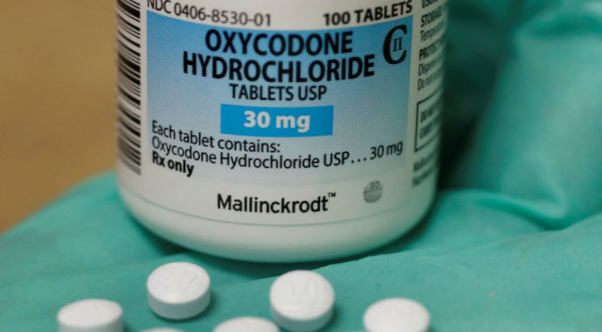
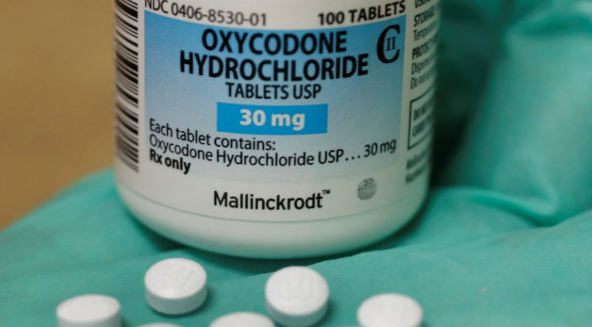

Counterfeit Oxycodone Vendor "Killwill" Arrested in Massachusetts
~2 min read | Published on 2019-07-01, tagged Arrested, Darkweb-Vendor using 434 words.
Anthony Stokes, a Massachusetts man accused of distributing counterfeit oxycodone pills, sold the counterfeits through the darkweb under the identities “Killwill” and Killwill2," a source told darknetlive.
Stokes, according to the U.S. Attorney’s office in Kansas, sold at least 114 counterfeit oxycodone pills between December 2018 and February 2019. The investigation into Stokes’ activities involved the United States Drug Enforcement Administration, the FDA Office of Criminal Investigation, and the United States Postal Inspection Service.
The United States Postal Inspection Service often investigates darkweb vendors. If a drug case involved the United States Postal Inspection Service, the defendant either shipped drugs using the United States Postal Service or received drugs through the Postal Service. The Drug Enforcement Administration’s involvement is fairly standard as well. Rarely, though, is the Food and Drug Administration involved in darkweb drug investigations. When the FDA’s Office of Criminal Investigation investigates a case (usually alongside the DEA or FBI), the case involves misbranded or counterfeit drugs.
In this case, Stokes allegedly sold counterfeit oxycodone pills that resembled the pills produced and distributed by the Mallinckrodt Pharmaceuticals company. “The tablets contained more than 14.6 grams of fentanyl,” the U.S. Attorney’s office said.
Very few details about the case have emerged. On PACER, the government’s index of court cases, only three documents exist: an indictment, a motion to seal the indictment, and a motion to unseal the indictment. The indictment contains no information linking Stokes to the darkweb vendor account Killwill.
However, information from other sources makes a case for the likely connection between the Massachusetts arrest and the vendor account.
The vendor distributed the same products that Stokes allegedly distributed; The vendor shipped packages from a location matching Stokes’ residence(s); The vendor account went inactive after the Massachusetts arrest and has remained inactive.
A source who independently looked into the connection provided this author with information verifying the connection between Stokes and the vendor account.
Although no criminal complaint or criminal information documents have surfaced, the involvement of the United States Postal Inspection Service indicates that Stokes had allegedly shipped or received the pills through the Postal Service. The charges include distributing fentanyl, indicating that Stokes was not the one receiving fentanyl. Furthermore, the U.S. Attorney’s office said Stokes had sold the pills to someone in Wyandotte County, Kansas—another indication that Stokes had shipped the pills instead of received the pills.
The information above provides only circumstantial evidence linking Stokes to Killwill. However, darknetlive correctly identified the EastSideHigh bust before authorities had announced a connection to the operation to the EastSideHigh vendor account.
If anyone has information to add, feel free to send an email to address provided on the about page.
Stokes, according to the U.S. Attorney’s office in Kansas, sold at least 114 counterfeit oxycodone pills between December 2018 and February 2019. The investigation into Stokes’ activities involved the United States Drug Enforcement Administration, the FDA Office of Criminal Investigation, and the United States Postal Inspection Service.
The United States Postal Inspection Service often investigates darkweb vendors. If a drug case involved the United States Postal Inspection Service, the defendant either shipped drugs using the United States Postal Service or received drugs through the Postal Service. The Drug Enforcement Administration’s involvement is fairly standard as well. Rarely, though, is the Food and Drug Administration involved in darkweb drug investigations. When the FDA’s Office of Criminal Investigation investigates a case (usually alongside the DEA or FBI), the case involves misbranded or counterfeit drugs.
In this case, Stokes allegedly sold counterfeit oxycodone pills that resembled the pills produced and distributed by the Mallinckrodt Pharmaceuticals company. “The tablets contained more than 14.6 grams of fentanyl,” the U.S. Attorney’s office said.
Very few details about the case have emerged. On PACER, the government’s index of court cases, only three documents exist: an indictment, a motion to seal the indictment, and a motion to unseal the indictment. The indictment contains no information linking Stokes to the darkweb vendor account Killwill.
However, information from other sources makes a case for the likely connection between the Massachusetts arrest and the vendor account.
A source who independently looked into the connection provided this author with information verifying the connection between Stokes and the vendor account.
Although no criminal complaint or criminal information documents have surfaced, the involvement of the United States Postal Inspection Service indicates that Stokes had allegedly shipped or received the pills through the Postal Service. The charges include distributing fentanyl, indicating that Stokes was not the one receiving fentanyl. Furthermore, the U.S. Attorney’s office said Stokes had sold the pills to someone in Wyandotte County, Kansas—another indication that Stokes had shipped the pills instead of received the pills.
The information above provides only circumstantial evidence linking Stokes to Killwill. However, darknetlive correctly identified the EastSideHigh bust before authorities had announced a connection to the operation to the EastSideHigh vendor account.
If anyone has information to add, feel free to send an email to address provided on the about page.